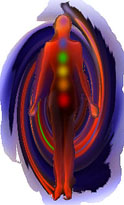

The use of sound to induce altered states of consciousness and
out-of-body experiences is an ancient practice dating back thousands of years.
The Tibetan monks are famous for their use of chants, chimes and bells to
enhance their meditative states. In the last two decades the benefits of
chanting and mantras have become a well-established part of meditation classes.
The repetition of certain sounds is widely known and accepted as an effective
method to enhance and improve an individual's focus of attention.
Even though sound frequency techniques are still relatively new, I'm certain
that with continuing research and development, this revolutionary form of
out-of-body induction will become commonplace in the near future. In order to
introduce you to sound frequency techniques I have enclosed an ancient technique
used for centuries by Tibetan monks. This is one of the oldest recorded
out-of-body techniques, dating back a thousand years before the birth of Christ.

THE CHAKRA SYSTEMThe word Chakra means, "wheel" in Sanskrit. In the body, chakras are the energy centers through which life energies flow. In all healings one must balance the chakra system in order to heal the patient.
Ancient Hindus formulated that there were seven of
these energy wheels, each a different color and spinning in a clockwise
direction. The location of chakras actually match major nerve or endocrine
centers in the body. There are also minor chakras in various parts of the body
including the hands and feet.
Chakras correlate with color frequencies, the musical scale and stones.
|
No |
|
Note |
|
|
|
8 |
|
C ' |
|
|
|
7 |
|
B |
|
|
|
6 |
|
A |
|
|
|
5 |
|
G |
|
|
|
4 |
|
F |
|
|
|
3 |
|
E |
|
|
|
2 |
|
D |
|
|
|
1 |
|
C |
|
|
ACTIVATING YOUR CHAKRAS
The use of quartz crystal bowls can activate and help to align your chakras. "Mystic Bowls" Sacred Sounds is sacred healing music incorporating seven crystal singing bowls, each bowl resonating to one of the seven chakras, or energy centers in the body. "Mystic Bowls" Sacred Sounds is a blend of 4-D technology and ancient healing tones to guide you into an altered state of consciousness which can make it easier to induce out of body experiences. It is also an excellent tool for spiritual healing sessions, energy work, meditation and massage. The vibration of the bowls acts to balance the chakras, remove energy blocks and assist in healing.
Stone Chakra Therapy:
Lie down and place a healing stone from the chart that correlates with the area of the body or chakra the that needs to be healed, cleared or activated and aligned. Leave in position for 3-5 minutes. Clear quartz crystal, may be substituted for any stone. You will experience the sensation of healing during this time. You can leave the crystal on for a few minutes longer, or substitute another stone, follow your intuition. Placing a stone on all 7 chakras at the same time for 25-30 minutes, can expedite healing. Try different combinations. This is an excellent healing method to work with a partner, placing stones and moving them from chakra to chakra as you are drawn to do so. One person receives the healing as the other places stones. After both have received the healing you may wish to discuss and record your experience..
Each of your chakras can connect with a guide or guides. Also a guide can link to more than one chakra. Relationships, not just with your guides but also with your friends and family, connect to the chakras as well. When you are in a relationship with someone you are also connected through your chakras. They can also connect with one or more chakras i.e. heart, root, solar plexus, etc.
Here is an example of how negative energy ties can be caused and removed. Problems in a relationship or ending one can cause energy blocks within the chakras. Finding and removing these blocks is not hard to do.
Lets practice finding the connections we have with our higher self.
First lets practice finding the connections we have with our higher self.
See yourself as a figure of energy.
You are facing your energy figure.
Now watch as lines of energy connect between you and your energy figure begin to manifest.
You may see connections to all chakras between you and your energy figure.
You may see just the heart: romance.
You may just the solar plexus: as in working relationships, friendships, etc.
You may see a white light appear between you and your energy figure connecting the higher chakras.
Look at the color of the connection, is it thick or thin, is it straight or twisted. The impressions you receive about the connection you have with your energy figure or higher self are indications of the energy blocks you may have within your chakras. Use the Stone Chakra Therapy method to remove the blocks and reactivate your chakras. After a brief time you will be able to master this skill.
Now lets find a connections you may have with someone you know.
You can also do this with anyone you know, people other then yourself or even someone who has passed over. The impressions you receive about the connection you have with this other person living or on the other side can indicate karma between you and that person.
See this person as a figure of energy.
You are facing this person's energy figure.
Now watch as lines of energy connect between you and this person's energy figure begin to manifest.
You may see connections to all chakras between you and this person's energy figure.
You may see just the heart: romance.
You may just the solar plexus: as in working relationships, friendships, etc.
You may see a white light appear between you and this person's energy figure connecting the higher chakras.
Remember not all connections are negative, so look for blocks and unhealthy ties. We are all connected on many levels, we need to keep these connections healthy, flowing and energetic.
Healing and removing the energetic ties that no longer serve the higher self of the people involved.
Check to see if all of the chakras are disconnected. There are several ways to disconnect from any unwanted relationship at this level. First try to physically inform the person you are disconnecting from that you are about to cut ties on all levels "Now and Forever". They may think that you are crazy and not understand why you are telling them this, but informing the person on the physical level is all it may take to remove the blocks and restore healthy energy flow.
If you cannot reach them in person or by phone etc., then verbally call out to them and tell them: you are about to cut ties on all levels "Now and Forever". On some level of awareness they will be aware of you intentions.
Now in your mind, remove the energetic ties that no longer serve you.
You must be prepared to end all energetic ties that no longer serve you in a healthy manner. You are severing parallel experiences so take time and meditate and prepare yourself psychically, mentally and spiritually before you do this. Your intention must be clear.
Now remove the energetic ties. Visualize the energetic ties between you and that person dissolving and inner energy flowing. Depending on the depth of the karma between you and that person the energetic ties may take much effort to remove. The energetic ties may symbolize many past life issues; therefore you may have to remove energetic ties to more than one chakra with that person. Once you have removed these the energetic ties you should feel relief and no remorse. Your attachment with this soul no longer exists.
You may need to do this with more then one person. Some people have a lot of karma to clear in this lifetime. This is a good way to release karma from this and past lives. Remember remove these energetic ties in your own time and space.
I would suggest you do this with one person at a time and no more than one per day.
Let the people you have removed energetic ties with release and move on. Be sure to send them love and light as you are creating balance. Wish them a speedy journey as they like you and I have much to do on the road to spiritual enlightenment.
By: Tom Carey
Source: http://www.mach1audio.com/out-of-body/techniques/soundfrequencytechniques.html